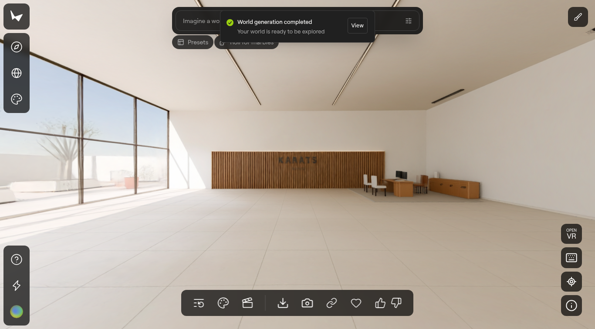
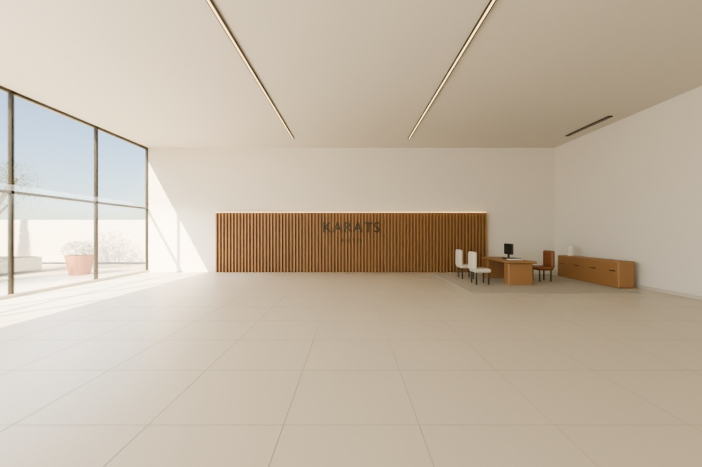
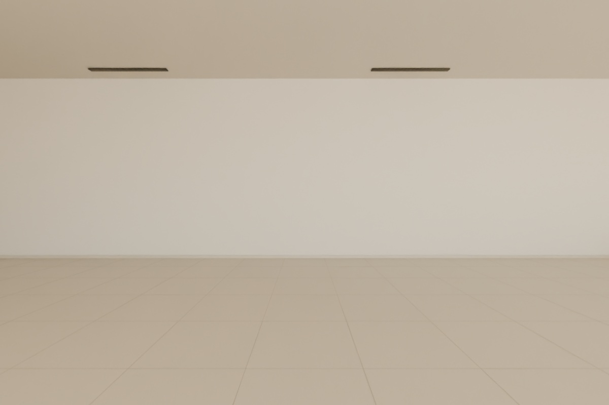
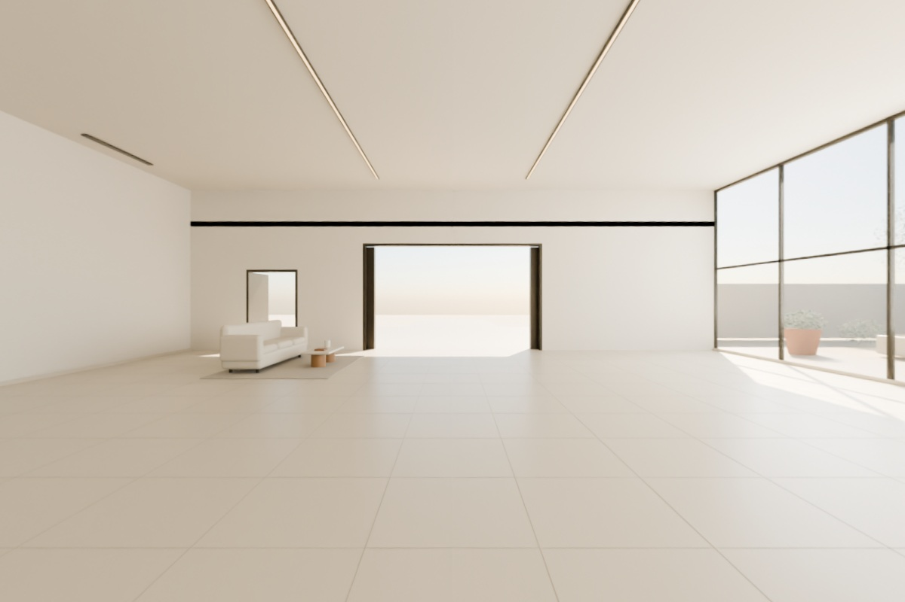
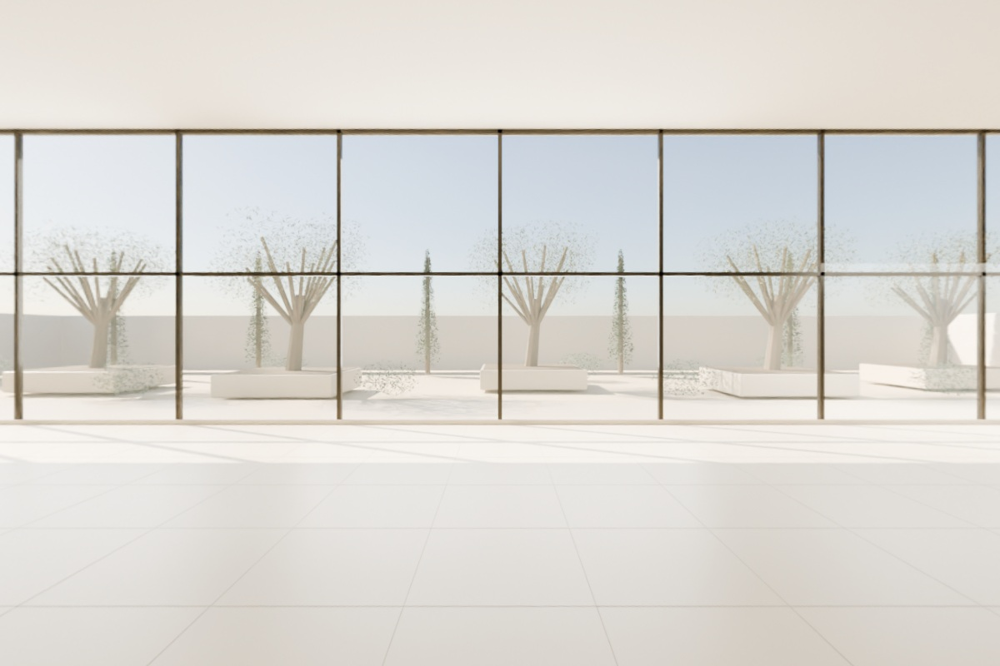

R25 · Пространственный тест · Marble 1.1
Готовая панорама вместо перерисовки интерьера
Мир создан из полной 360°-панорамы, рассчитанной непосредственно из единой сцены R23. Стены, проёмы, стекло, бренд и мебель во входном изображении не генерировались заново.
Это тест реконструкции, не готовый автосалон. Генерация завершена. Стартовый вид и кадр после команды движения получены, но при дальнейшем обходе просмотрщик завис; отдельное гостевое окно также не завершило загрузку. Поэтому полный обход, метрическая точность, все маршруты и качество каждого близкого ракурса не проверены. Каталог, клики по предметам и скролл-навигация в этот мир не встроены. Исходный интерьер остаётся техническим, не финальным фотографическим оформлением. На Free нет экспорта и коммерческих прав; тест публичный.
Результат Marble

Что было подано на вход
Четыре обычных ракурса из одного сферического рендера 4096 × 2048. Геометрия исходной Blender-сцены не изменялась. Автомобили намеренно отсутствуют: заменяемый сток должен оставаться отдельным слоем.



